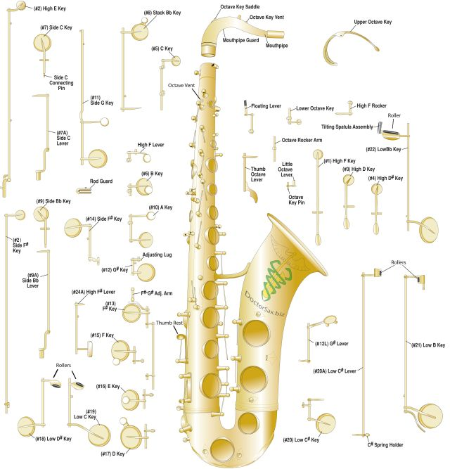

The Saxophone
The saxophone is a member of the woodwind family. Its name comes from a hybrid of its creator, Adolf Sax, and phone, which means sound. The saxophone has a conical bore and uses a single reed similar to that of the clarinet. The saxophone was created with a specific sound in mind and its sound is much more powerful than any other woodwind instruments. Saxophones do not ordinarily appear in orchestral music, but they are very abundant in jazz.
Jokes
What do a saxophone and a lawsuit have in common?
Everyone's relieved when the case is closed.